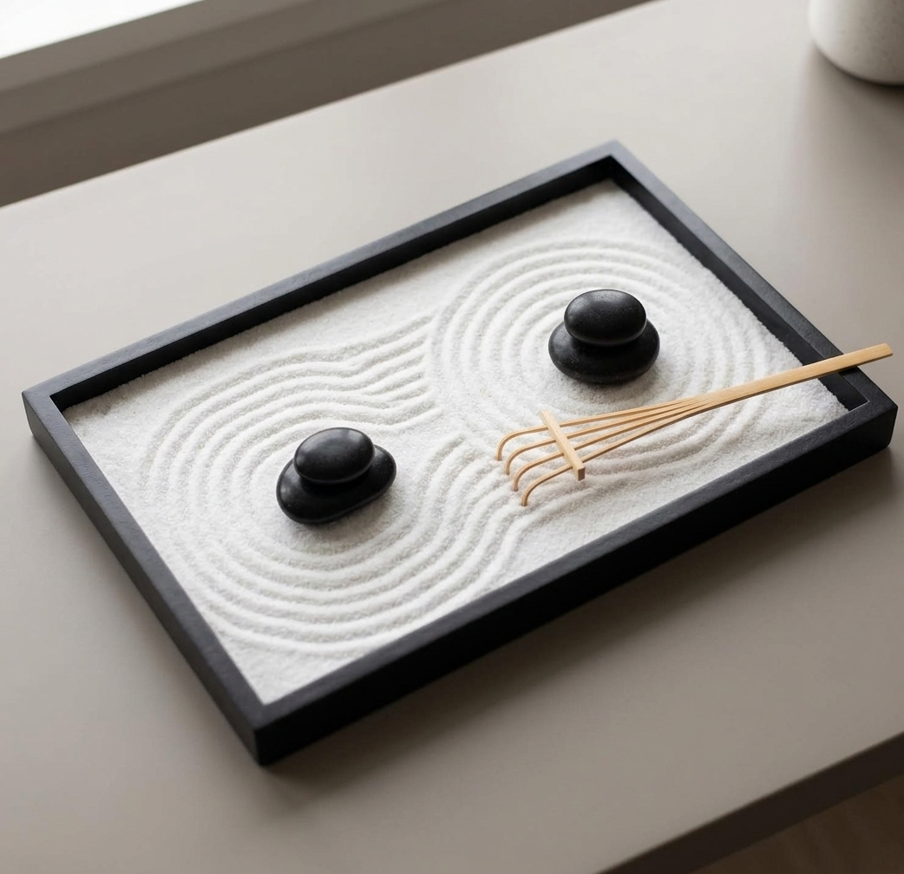

Rake the sand, place the stones, breathe — a traditional Japanese zen garden sized for your desk.

Raking sand for sixty seconds between meetings is a small, physical way to step out of screen time without leaving your desk.
Everything needed to recreate different patterns and layouts — this isn't a one-trick sandbox, it's a full mindfulness set.
Unlike most desk toys, a raked sand tray reads as calm and deliberate — a quiet complement to any workspace.
Karesansui — Japanese dry landscape gardening — uses raked gravel and placed stones to represent water and mountains. This kit brings that same practice to an 11x8 inch desktop tray.
There's no plant care, no mess, and no wrong way to rake it — just a few minutes of quiet focus whenever you need it.
Use the flat tool to reset the tray to a blank canvas.
Draw slow, deliberate lines — waves, spirals, or straight rows.
Arrange the accessories to finish your miniature landscape.
It stays contained in the wooden tray during normal use — no water or spills involved.
It works equally well on a home desk, nightstand, or meditation corner — anywhere you want a small reset ritual.
The tray, fine sand, a rake, and a full set of stones and accessories for building different layouts.
A traditional zen sand garden, sized for daily use — see current pricing and availability on Amazon.
Check Price on Amazon →